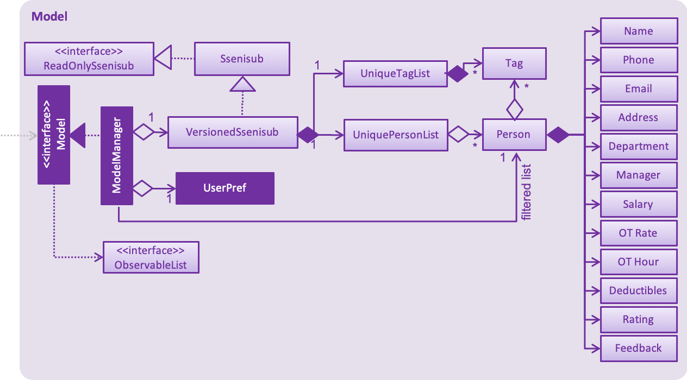

By: Team T13-2 Since: Oct 2018 Licence: MIT
- 1. Setting up
- 2. Design
- 3. Implementation
- 3.1. Add Feature
- 3.2. Salary, OT Hours, OT Rate and Pay Deductibles For Staff
- 3.3. Feedback command feature
- 3.4. Rate command feature
- 3.5. Privacy Feature
- 3.6. Sort Feature
- 3.7. Sort By Department Feature
- 3.8. Sort By Rating From Highest To Lowest Feature
- 3.9. Sort By Rating From Lowest To Highest Feature
- 3.10. Favourite Feature
- 3.11. Unfavourite Feature
- 3.12. Undo/Redo feature
- 3.13. Lock and Unlock Feature (coming in v2.0)
- 3.14. [Proposed] Login Feature
- 3.15. [Proposed] Data Encryption
- 3.16. Logging
- 3.17. Configuration
- 4. Documentation
- 5. Testing
- 6. Dev Ops
- Appendix A: Suggested Programming Tasks to Get Started
- Appendix B: Product Scope
- Appendix C: User Stories
- Appendix D: Use Cases
- Appendix E: Non Functional Requirements
- Appendix F: Glossary
- Appendix G: Instructions for Manual Testing
1. Setting up
1.1. Prerequisites
-
JDK
9or laterJDK 10on Windows will fail to run tests in headless mode due to a JavaFX bug. Windows developers are highly recommended to use JDK9. -
IntelliJ IDE
IntelliJ by default has Gradle and JavaFx plugins installed.
Do not disable them. If you have disabled them, go toFile>Settings>Pluginsto re-enable them.
1.2. Setting up the project in your computer
-
Fork this repo, and clone the fork to your computer
-
Open IntelliJ (if you are not in the welcome screen, click
File>Close Projectto close the existing project dialog first) -
Set up the correct JDK version for Gradle
-
Click
Configure>Project Defaults>Project Structure -
Click
New…and find the directory of the JDK
-
-
Click
Import Project -
Locate the
build.gradlefile and select it. ClickOK -
Click
Open as Project -
Click
OKto accept the default settings -
Open a console and run the command
gradlew processResources(Mac/Linux:./gradlew processResources). It should finish with theBUILD SUCCESSFULmessage.
This will generate all resources required by the application and tests.
1.3. Verifying the setup
-
Run the
seedu.address.MainAppand try a few commands -
Run the tests to ensure they all pass.
1.4. Configurations to do before writing code
1.4.1. Configuring the coding style
This project follows oss-generic coding standards. IntelliJ’s default style is mostly compliant with ours but it uses a different import order from ours. To rectify,
-
Go to
File>Settings…(Windows/Linux), orIntelliJ IDEA>Preferences…(macOS) -
Select
Editor>Code Style>Java -
Click on the
Importstab to set the order-
For
Class count to use import with '*'andNames count to use static import with '*': Set to999to prevent IntelliJ from contracting the import statements -
For
Import Layout: The order isimport static all other imports,import java.*,import javax.*,import org.*,import com.*,import all other imports. Add a<blank line>between eachimport
-
Optionally, you can follow the UsingCheckstyle.adoc document to configure Intellij to check style-compliance as you write code.
1.4.2. Updating documentation to match your fork
After forking the repo, the documentation will still have the SE-EDU branding and refer to the se-edu/addressbook-level4 repo.
If you plan to develop this fork as a separate product (i.e. instead of contributing to se-edu/addressbook-level4), you should do the following:
-
Configure the site-wide documentation settings in
build.gradle, such as thesite-name, to suit your own project. -
Replace the URL in the attribute
repoURLinDeveloperGuide.adocandUserGuide.adocwith the URL of your fork.
1.4.3. Setting up CI
Set up Travis to perform Continuous Integration (CI) for your fork. See UsingTravis.adoc to learn how to set it up.
After setting up Travis, you can optionally set up coverage reporting for your team fork (see UsingCoveralls.adoc).
| Coverage reporting could be useful for a team repository that hosts the final version but it is not that useful for your personal fork. |
Optionally, you can set up AppVeyor as a second CI (see UsingAppVeyor.adoc).
| Having both Travis and AppVeyor ensures your App works on both Unix-based platforms and Windows-based platforms (Travis is Unix-based and AppVeyor is Windows-based) |
1.4.4. Getting started with coding
When you are ready to start coding,
-
Get some sense of the overall design by reading Section 2.1, “Architecture”.
-
Take a look at Appendix A, Suggested Programming Tasks to Get Started.
2. Design
2.1. Architecture

The Architecture Diagram given above explains the high-level design of the App. Given below is a quick overview of each component.
The .pptx files used to create diagrams in this document can be found in the diagrams folder. To update a diagram, modify the diagram in the pptx file, select the objects of the diagram, and choose Save as picture.
|
Main has only one class called MainApp. It is responsible for,
-
At app launch: Initializes the components in the correct sequence, and connects them up with each other.
-
At shut down: Shuts down the components and invokes cleanup method where necessary.
Commons represents a collection of classes used by multiple other components. Two of those classes play important roles at the architecture level.
-
EventsCenter: This class (written using Google’s Event Bus library) is used by components to communicate with other components using events (i.e. a form of Event Driven design) -
LogsCenter: Used by many classes to write log messages to the App’s log file.
The rest of the App consists of four components.
Each of the four components
-
Defines its API in an
interfacewith the same name as the Component. -
Exposes its functionality using a
{Component Name}Managerclass.
For example, the Logic component (see the class diagram given below) defines it’s API in the Logic.java interface and exposes its functionality using the LogicManager.java class.

Events-Driven nature of the design
The Sequence Diagram below shows how the components interact for the scenario where the user issues the command delete 1.
delete 1 command (part 1)
Note how the Model simply raises a SsenisubChangedEvent when SSENISUB data are changed, instead of asking the Storage to save the updates to the hard disk.
|
The diagram below shows how the EventsCenter reacts to that event, which eventually results in the updates being saved to the hard disk and the status bar of the UI being updated to reflect the 'Last Updated' time.

delete 1 command (part 2)
Note how the event is propagated through the EventsCenter to the Storage and UI without Model having to be coupled to either of them. This is an example of how this Event Driven approach helps us reduce direct coupling between components.
|
The sections below give more details of each component.
2.2. UI component

API : Ui.java
The UI consists of a MainWindow that is made up of parts e.g.CommandBox, ResultDisplay, PersonListPanel,
StatusBarFooter, StaffPanel etc. All these, including the MainWindow, inherit from the abstract UiPart class.
The UI component uses JavaFx UI framework. The layout of these UI parts are defined in matching .fxml files that are in the src/main/resources/view folder. For example, the layout of the MainWindow is specified in MainWindow.fxml
The UI component,
-
Executes user commands using the
Logiccomponent. -
Binds itself to some data in the
Modelso that the UI can auto-update when data in theModelchange. -
Responds to events raised from various parts of the App and updates the UI accordingly.
2.3. Logic component
API :
Logic.java
-
Logicuses theSsenisubParserclass to parse the user command. -
This results in a
Commandobject which is executed by theLogicManager. -
The command execution can affect the
Model(e.g. adding a staff) and/or raise events. -
The result of the command execution is encapsulated as a
CommandResultobject which is passed back to theUi.
Given below is the Sequence Diagram for interactions within the Logic component for the execute("delete 1") API call.

delete 1 Command2.4. Model component

API : Model.java
The Model,
-
stores a
UserPrefobject that represents the user’s preferences. -
stores SSENISUB data.
-
exposes an unmodifiable
ObservableList<Person>that can be 'observed' e.g. the UI can be bound to this list so that the UI automatically updates when the data in the list change. -
does not depend on any of the other three components.
As a more OOP model, we can store a Tag list in SSENISUB, which Person can reference. This would allow SSENISUB to only require one Tag object per unique Tag, instead of each Person needing their own Tag object. An example of how such a model may look like is given below. |
2.5. Storage component
API : Storage.java
The Storage component,
-
can save
UserPrefobjects in json format and read it back. -
can save SSENISUB data in xml format and read it back.
2.6. Common classes
Classes used by multiple components are in the seedu.addressbook.commons package.
3. Implementation
This section describes some noteworthy details on how certain features are implemented.
3.1. Add Feature
3.1.1. Current Implementation
The add command allows HR users to add staff into SSENISSUB. It will ensure that there will be no duplicate with
any existing staff.
The following sequence diagram shows the sequence flow from the LogicManager to the ModelManager when a HR user
enter a add command:

Figure 3.4.1.1 Sequence Diagram for add command
From the sequence diagram:
-
When
Logic Managerreceives theexecutecommand from the app, it calls the parseCommand method inSsenisubParser. -
SsenisubParserwill receive add as the command and instantiateAddCommandParserto parse the rest of the command. -
If the arguments specified are valid, a
AddCommandwould be created and returned by to theLogicManager. -
LogicManagerwould proceed to callexecuteof theAddCommand. -
A new staff would be added and a successful
CommandResultwould be returned and displayed.
SSENISSUB’s staff is stored with name, phone, email address, home address, department, manager name and can be search and listed only with names.
All fields are checked against respective validations with each model. If the provided command either does not have
any field, or field with invalid input, a ParseException would be thrown.
3.1.2. Design Considerations
Implementation of AddCommandParser
-
Alternative 1 (current choice):
addis parsed first, then the rest of the arguments asAddCommandParser-
Pros: Better modularization for commands
-
Cons: More classes will be needed = more code to be written
-
-
Alternative 2:
addis parsed straight fromSsenisubParser-
Pros: Reduces the number of classes needed = less code to be written
-
Cons: Poor modularization for commands
-
3.2. Salary, OT Hours, OT Rate and Pay Deductibles For Staff
3.2.1. Introduction
We have introduced four new fields to a staff namely the salary, overtime(OT) hours, OT rate and Pay deductibles for a staff. This is to allow the HR department of the company to keep track of individual staff’s details.
3.2.2. Current Implementation
The current implementation of this feature is embedded into a Person object together with the other information that was originally in the Person object. Prefixes for the respective fields were also created to allow the HR user to edit the necessary information whenever needed.
A newly added staff into SSENISUB would be assigned the default values of 0 for all four fields. This is to better allow the HR staff to manage the information of the staff. Naturally, when a person first joins the company, he would not have raked up any OT hours and the rate is dependent on the job of the individual.
Should the user now want to edit a staff’s salary, OT hours, OT rate or pay deductibles, the user can now simply input the prefixes followed by the numerals of each field to edit in the edit command. The fields would then be edited depending if the prefixes were there or not (similar to the edit command).
3.2.3. Design Considerations
-
Alternative 1 (First Implementation): Merging the OT hours, OT rate and pay deductibles within a Salary class
-
Pros: Easier to calculate net pay
-
Cons: Harder to implement and would result in many conflicts within the software itself. Harder to debug
-

Figure 3.9.3.1 Idea of First Implementation
-
Alternative 2 (Current Implementation): Separating out each field to their own classes
-
Pros: Easier to implement and allows for more flexibility if the fields are required to be computed/used for other information, easier to identify issues when something goes wrong
-
Cons: Does not seem intuitive to separate it out since OT hours, OT rate and pay deductibles are used to compute salary
-

Figure 3.9.3.2 Idea of Second Implementation
3.3. Feedback command feature
3.3.1. Introduction
Similar to the rate command, we have implemented a feedback command feature as an enhancement, which also focuses on the
Logic component. A Feedback class is implemented to support this, which the Person class is dependent on. This
command allows users, especially for managers, to give feedback to their employees within an organisation for them to
know what to look out for in their performance and improve themselves.
| This command also differs from the add and edit command, because users cannot simply add an employee with a feedback through the add command or edit an employee’s feedback through the edit command. Every employee added will start off without any feedback assigned to him/her. |
Any updates to an employee’s feedback should only
be done by a person of authority, i.e. Manager.
|
3.3.2. Current Implementation
The feedback command, like the rate command, executes nonparallel to the add and edit command. Upon adding an employee,
a FEEDBACK.DEFAULT_INITIAL_FEEDBACK with a default value of "-NO FEEDBACK YET-", is initialised on the Person and
then saved.
Given below is a sequence diagram shows how the feedback operation works:

A simple profanity is implemented in the Feedback class, which checks for any profanity found within the feedback
input (Adapted from Simple Profanity Filter).
The list of English and Singlish profanities (Profanity List)
used can be subjected to expansion and modification. The filter works by iterating through the whole input to find any possible
sequence of words (no re-ordering) that match any profanity found within the profanity list. As such, runtime will be
dependent on input length rather than profanity list length.
Given below is a sequence diagram to show how the profanity filter operation works (This extends from the previous diagram,
which omitted the part where Feedback is called by FeedbackCommandParser):
3.3.3. Noteworthy Features:
-
The filter is case insensitive.
-
In the profanity list, profanities are separated into rows with the format:
[THE_BAD_WORD],[IGNORE_IN_COMBINATION_WITH]-
[THE_BAD_WORD]is the profanity to filter out. -
[IGNORE_IN_COMBINATION_WITH]can be empty, or contain a series of 1 or more words (separated by commas) that[THE_BAD_WORD]can be used with, e.g. paki, pakistan. "paki" is a racial slur and will be rejected, but if "pakistan", a country name, is entered, "pakistan" will be accepted even though it contains "paki". -
Each iteration ends when the end of the string is reached or the length of the current substring checked reaches the longest profanity string length within the profanity list (For increased performance).
-
-
Any leetspeak in the input will be replaced by its appropriate characters before the check, i.e. "H3ll0" will be corrected to "Hello".
| This profanity filter is quite basic and can be bypassed because of replacing leetspeak. For example, "2 girls 1 cup" is considered as inappropriate, but the replacement of "1" to "i" will cause the input to be accepted. An easy solution is to hard code the check of this input, but there will be many other examples like this that we would have to hard code for. As such, we have decided to accept this as a minor shortfall of this implementation. |
Given below is a sample run of the profanity filter with a feedback input of "u suckz":
-
Iteration 1:
-
1a: "u": Not a profanity (No match with line in profanity list).
-
1b: "u ": Not a profanity (No match with line in profanity list).
-
…
-
1g: "u suckz": Not a profanity (No match with line in profanity list).
-
-
Iteration 2:
-
2a: " ": Not a profanity (No match with line in profanity list).
-
2b: " s": Not a profanity (No match with line in profanity list).
-
…
-
2f: " suckz": Not a profanity (No match with line in profanity list).
-
-
Iteration 3:
-
3a: "s": Not a profanity (No match with line in profanity list).
-
3b: "su": Not a profanity (No match with line in profanity list).
-
3c: "suc": Not a profanity (No match with line in profanity list).
-
3d: "suck": Profanity! (Matches with a line in profanity list). Added to a list of bad words found.
-
3e: "suckz": Not a profanity (No match with line in profanity list).
-
-
…
-
Iteration 7:
-
7a: "z": Not a profanity (No match with line in profanity list).
-
-
The resulting list has only 1 value: "suck" and the input will be rejected since there is at least 1 profanity found.
3.3.4. Design Considerations
How to implement the profanity filter
To ensure fast retrieval, a HashMap is used to store profanities to be rejected from the data file before using it to check if the input contains any profanities inside.
-
Alternative 1 (current choice): Check every substring of the input to see if it matches any profanity-to-reject within the HashMap.
-
Pros: O(1) runtime per substring when checking whether a particular substring of the input.
-
Cons: Runs for O(n2) time, where n is the number of characters in the input.
-
While this may look daunting, we have a character input limit on
Personattributes (feedback included) of 50. As such, there is an imposed upper bound on the performance time, preventing any significant decline in performance. -
Also, one optimisation method implemented (mentioned in Feedback noteworthy features) is ending the iteration when the length of the longest string within the profanities-to-reject is reached. This improves the performance time to O(ln), where l is length of the longest profanity-to-reject.
-
-
-
Alternative 2 : Check every element in HashMap to see if it is contained within the input.
-
Pros: Runs for O(n) time per element in HashMap using the String.contains() method, where n is the number of characters in the input, and is capped at n ≤ 50 (Mentioned in Alternative 1).
-
Cons: Runs for O(nm) time, where m is the number of elements in the HashMap. m can increase infinitely by extending the list of profanities-to-reject (i.e. Adding profanities of other languages, adding newly created profanities, adding profanities that have been overlooked, etc.)
-
Hence, this alternative is not as efficient as O(lm) in Alternative 1 as l can be capped but m may not.
-
-
3.4. Rate command feature
3.4.1. Introduction
We have implemented a rate command feature as an enhancement, which focuses on the Logic component.
A Rating class is implemented to support this, which the Person class is dependent on. This command
allows users, especially for managers to update ratings of employees within an organisation.
| This command differs from the add and edit command, because users cannot simply add an employee with a rating through the add command or edit an employee’s rating through the edit command. |
Any updates to an employee’s rating should only
be done by a person of authority, i.e. Manager.
|
3.4.2. Current Implementation
The rate command, as mentioned, executes asynchronous to the add and edit command. Upon adding an employee, a Rating.DEFAULT_INITIAL_RATING
with a default value of 0, is initialised on the Person and then saved.
There are 2 validation regular expressions found in the Rating class:
-
VALIDATION_REGEXwhich checks for integer values from 0 - 10 ofRatingwhich have already been added. 0 is included as there may be a case when aPersonhas already been added but his/herRatinghas yet to be updated. -
VALIDATION_INPUT_REGEXwhich checks for integer values from 1 - 10 ofRatingto be added by users with the rate command.
Given below is a sequence diagram shows how the rate operation works:

3.5. Privacy Feature
3.5.1. Introduction
We have implemented a privacy feature to fields that we deem to have importance in having an option to be made private. A Privacy Command is implemented to be able to set the privacy values of the information of the selected person.
3.5.2. Current implementation
The privacy feature is currently implemented as a boolean field under information classes that can be made private (Phone, Email, Address as of v1.4).
A new command PrivacyCommand is implemented to be able to change the Privacy values of classes that have a Privacy field. The add command can also add a Staff with private fields directly.
The GUI will also display private fields as private.
| This command can only change fields that can be made private, and will throw an exception otherwise. |
Coming in v2.0:
To change a field to private or not private, a 'y' or 'n' is the expected input respectively. This is planned to
change in future updates where there can be different levels of privacy for different fields.
Given below is an activity diagram that shows how the Privacy command works:

3.5.3. Design Considerations
How to implement Privacy
-
Alternative 1 (current choice): Use privacy as a boolean value
-
Pros: Easy to implement as there is only 2 values to take note off
-
Cons: Restrictive in what it can do looking at a future aspect where different level of privacy may be required
-
-
Alternative 2: Implement Privacy as a Enum class
-
Pros: Able to have different level of Privacy and prevents wrong input automatically
-
Cons: Harder to implement and extra work not required in current stage of project
-
3.6. Sort Feature
3.6.1. Introduction
We have implemented a sort command that focuses on the Logic component. A SortCommand class is added.
3.6.2. Current Implementation
This sort command sorts the staff list by name in lexicographical order.
Given below is a sequence diagram that shows how the sort command works:

3.6.3. Design Considerations
Implementation of sort command
-
Alternative 1 (current choice): Sorts by favourite then by name
-
Pros: Favourited staff stays on top of the list, favourited staff still easier to find
-
Cons: The overall list is not 100% sorted by name
-
-
Alternative 2: Sorts by name then by favourite
-
Pros: Overall list sorted wholly by name, easier to find a specific person when not known whether favourited or not
-
Cons: Favourited person scattered all over in the list, defeats the purpose of having favourited staff
-
3.7. Sort By Department Feature
3.7.1. Introduction
This sort by department command is a further enhancement to the sort command that also focuses on the Logic component. A SortDeptCommand class is added.
3.7.2. Current Implementation
This sortDept command sorts the staff list by department in lexicographical order.
Given below is a sequence diagram that shows how the sortDept command works:

3.7.3. Design Considerations
Implementation of sortDept command
-
Alternative 1 (current choice): Sorts by department then by favourite then by name
-
Pros: Easier to go through the different departments without a hassle
-
Cons: Favourited staff does not stay on top of the list
-
-
Alternative 2: Sorts by favourite then by department then by name
-
Pros: Favourited staff stay on top of the list
-
Cons: The main purpose of sorting by department is to group the staff by the different department, so there is no point in putting the favourites on top of the list
-
3.8. Sort By Rating From Highest To Lowest Feature
3.8.1. Introduction
This sort by rating command is a further enhancement to the sort command that also focuses on the Logic component. A SortRatingDownCommand class is added.
3.8.2. Current Implementation
This sortRatingDown command sorts the staff list by rating from highest to lowest.
Given below is a sequence diagram that shows how the sortRatingDown command works:

3.8.3. Design Considerations
Implementation of sortRatingDown command
-
Alternative 1 (current choice): Sorts by rating down then by favourite then by name
-
Pros: Staff list is sorted wholly by their ratings, easier to process for the case of staff performance review as being favourited or not should not affect its rating ranking
-
Cons: Favourited staff does not stay on top of the list
-
-
Alternative 2: Sorts by favourite then by rating down then by name
-
Pros: Favourited staff stay on top of the list
-
Cons: As rating by rating is intended for the use of staff performance review, it would not be helpful to do it this way
-
The use of sortRatingDown when command alias sortRating is called
-
Alternative 1 (current choice): Inputting sortRating sorts the staff list by rating from highest to lowest
-
Pros: This alternative is chosen as it is believed that there are more cases that make use of sorting from highest rating, e.g. job promotion review, performance-related additional wage
-
Cons: Some people might expect the default sort by rating to sort the list from lowest to highest
-
-
Alternative 2: Inputting sortRating sorts the staff list by rating from lowest to highest
-
Pros: There are cases where sort rating from lowest is needed, e.g. the need to let go of staff due to budget cuts
-
Cons: Some people might expect the default sort by rating to sort the list from highest to lowest
-
3.9. Sort By Rating From Lowest To Highest Feature
3.9.1. Introduction
This sort by rating command is a further enhancement to the sort command that also focuses on the Logic component. A SortRatingDownCommand class is added.
3.9.2. Current Implementation
This sortRatingUp command sorts the staff list by rating from lowest to highest.
Given below is a sequence diagram that shows how the sortRatingUp command works:

3.9.3. Design Considerations
Implementation of sortRatingUp command
-
Alternative 1 (current choice): Sorts by rating up then by favourite then by name
-
Pros: Staff list is sorted wholly by their ratings, easier to process for the case of staff performance review as being favourited or not should not affect its rating ranking
-
Cons: Favourited staff does not stay on top of the list
-
-
Alternative 2: Sorts by favourite then by rating up then by name
-
Pros: Favourited staff stay on top of the list
-
Cons: As rating by rating is intended for the use of staff performance review, it would not be helpful to do it this way
-
3.10. Favourite Feature
3.10.1. Introduction
We have implemented a favourite command that focuses on the Logic component. A 'FavouriteCommand` class is added.
3.10.2. Current Implementation
This favourite command allows contacts to be added to a favourite list and moves the contact to the top of the list.
Given below is a sequence diagram that shows how the favourite command works:
3.10.3. Design Considerations
Implementation of favourite command
-
Alternative 1 (current choice): Favourite command can be called using a command alias 'fav'
-
Pros: Easier and faster command calling
-
Cons: Ambiguity in choosing command alias (can be either fave or fav)
-
-
Alternative 2: Favourite command takes in command word 'favourite'
-
Pros: Clear command word taken in
-
Cons: Slower command calling
-
3.11. Unfavourite Feature
3.11.1. Introduction
As we have implemented a favourite command, we also have implemented an unfavourite command that focuses on the Logic component. An 'UnfavouriteCommand` class is added.
3.11.2. Current Implementation
This unfavourite command allows contacts to be removed from the favourite list.
Given below is a sequence diagram that shows how the unfavourite command works:

3.11.3. Design Considerations
Implementation of unfavourite command
-
Alternative 1 (current choice): Using a separate unfavourite command
-
Pros: Clear use of command
-
Cons: Adds yet another command to command list
-
-
Alternative 2: Doing a favourite command on a favourited person will unfavourite them instead
-
Pros: Easier implementation
-
Cons: Ambiguous use of this feature as the command is a favourite command
-
3.12. Undo/Redo feature
3.12.1. Current Implementation
The undo/redo mechanism is facilitated by VersionedSsenisub.
It extends SSENISUB with an undo/redo history, stored internally as an SsenisubStateList and currentStatePointer.
Additionally, it implements the following operations:
-
VersionedSsenisub#commit()— Saves the current SSENISUB state in its history. -
VersionedSsenisub#undo()— Restores the previous SSENISUB state from its history. -
VersionedSsenisub#redo()— Restores a previously undone SSENISUB state from its history.
These operations are exposed in the Model interface as Model#commitSsenisub(), Model#undoSsenisub() and Model#redoSsenisub() respectively.
Given below is an example usage scenario and how the undo/redo mechanism behaves at each step.
Step 1. The user launches the application for the first time. The VersionedSsenisub will be initialized with the initial SSENISUB state, and the currentStatePointer pointing to that single SSENISUB state.

Step 2. The user executes delete 5 command to delete the 5th staff in SSENISUB. The delete command calls Model#commitSsenisub(), causing the modified state of SSENISUB after the delete 5 command executes to be saved in the SsenisubStateList, and the currentStatePointer is shifted to the newly inserted address book state.
Step 3. The user executes add n/David … to add a new staff. The add command also calls Model#commitSsenisub(), causing another modified address book state to be saved into the SsenisubStateList.
If a command fails its execution, it will not call Model#commitSsenisub(), so SSENISUB state will not be saved into the SsenisubStateList.
|
Step 4. The user now decides that adding the staff was a mistake, and decides to undo that action by executing the undo command. The undo command will call Model#undoSsenisub(), which will shift the currentStatePointer once to the left, pointing it to the previous address book state, and restores SSENISUB to that state.

If the currentStatePointer is at index 0, pointing to the initial address book state, then there are no previous address book states to restore. The undo command uses Model#canUndoSsenisub() to check if this is the case. If so, it will return an error to the user rather than attempting to perform the undo.
|
The following sequence diagram shows how the undo operation works:

The redo command does the opposite — it calls Model#redoSsenisub(), which shifts the currentStatePointer once to the right, pointing to the previously undone state, and restores SSENISUB to that state.
If the currentStatePointer is at index SsenisubStateList.size() - 1, pointing to the latest address book state, then there are no undone address book states to restore. The redo command uses Model#canRedoSsenisub() to check if this is the case. If so, it will return an error to the user rather than attempting to perform the redo.
|
Step 5. The user then decides to execute the command list. Commands that do not modify SSENISUB, such as list, will usually not call Model#commitSsenisub(), Model#undoSsenisub() or Model#redoSsenisub(). Thus, the SsenisubStateList remains unchanged.
Step 6. The user executes clear, which calls Model#commitSsenisub(). Since the currentStatePointer is not pointing at the end of the SsenisubStateList, all address book states after the currentStatePointer will be purged. We designed it this way because it no longer makes sense to redo the add n/David … command. This is the behavior that most modern desktop applications follow.
The following activity diagram summarizes what happens when a user executes a new command:
3.12.2. Design Considerations
Aspect: How undo & redo executes
-
Alternative 1 (current choice): Saves the entire address book.
-
Pros: Easy to implement.
-
Cons: May have performance issues in terms of memory usage.
-
-
Alternative 2: Individual command knows how to undo/redo by itself.
-
Pros: Will use less memory (e.g. for
delete, just save the staff being deleted). -
Cons: We must ensure that the implementation of each individual command are correct.
-
Aspect: Data structure to support the undo/redo commands
-
Alternative 1 (current choice): Use a list to store the history of address book states.
-
Pros: Easy for new Computer Science student undergraduates to understand, who are likely to be the new incoming developers of our project.
-
Cons: Logic is duplicated twice. For example, when a new command is executed, we must remember to update both
HistoryManagerandVersionedSsenisub.
-
-
Alternative 2: Use
HistoryManagerfor undo/redo-
Pros: We do not need to maintain a separate list, and just reuse what is already in the codebase.
-
Cons: Requires dealing with commands that have already been undone: We must remember to skip these commands. Violates Single Responsibility Principle and Separation of Concerns as
HistoryManagernow needs to do two different things.
-
3.13. Lock and Unlock Feature (coming in v2.0)
3.13.1. Introduction
We will implement an unlock command that focuses on the Storage component. An UnlockCommand class is added
and an UnlockEvent event is also added.
3.13.2. Current Implementation
The unlock command allows changes made to be saved to SSENISUB.
Without the correct (for now hardcoded) password, all the changes made (add, edit, delete)during the session will not be saved and will not be shown once the window is closed and reopened.
The following activity diagram shows how the current Unlock command works:
Given below is an activity diagram that shows how the unlock command is intended to work:

3.13.3. Design Considerations
Implementation of unlock
-
Alternative 1 (current choice): Unlocking is handled as an event rather than a command.
-
Pros: Unlocking can be done at any time and event handler is used
-
Cons: Does not resemble a real unlocking function, minimal functionality
-
-
Alternative 2: Unlocking is a command that overrides all other commands
-
Pros: Makes more sense as an unlock function
-
Cons: Harder to implement
-
3.14. [Proposed] Login Feature
3.14.1. Introduction
The login feature will be implemented together with an authorization level feature. Based on the login credentials, the staff using the SSENISUB will have varying levels of access to the various features offered.
The idea and motivation behind this is that as we plan for SSENISUB to be used as a central database and can be used by any
staff, not all commands and features should be utilized by a typical staff, such as delete. Only a HR Manager should have the
authorization to be able to delete or add staff.
With the implementation of authorization levels, we will then be able to categorize the other features based on authority required to access them, and also affect the visibility state of private information.
A Logout feature will also be implemented for the case of a shared device, which multiple staff can be using throughout the day.
Given below is an activity diagram that shows how this feature works when a user wants to use the Delete command.

3.15. [Proposed] Data Encryption
{Explain here how the data encryption feature will be implemented}
3.16. Logging
We are using java.util.logging package for logging. The LogsCenter class is used to manage the logging levels and logging destinations.
-
The logging level can be controlled using the
logLevelsetting in the configuration file (See Section 3.17, “Configuration”) -
The
Loggerfor a class can be obtained usingLogsCenter.getLogger(Class)which will log messages according to the specified logging level -
Currently log messages are output through:
Consoleand to a.logfile.
Logging Levels
-
SEVERE: Critical problem detected which may possibly cause the termination of the application -
WARNING: Can continue, but with caution -
INFO: Information showing the noteworthy actions by the App -
FINE: Details that is not usually noteworthy but may be useful in debugging e.g. print the actual list instead of just its size
3.17. Configuration
Certain properties of the application can be controlled (e.g App name, logging level) through the configuration file (default: config.json).
4. Documentation
We use asciidoc for writing documentation.
| We chose asciidoc over Markdown because asciidoc, although a bit more complex than Markdown, provides more flexibility in formatting. |
4.1. Editing Documentation
See UsingGradle.adoc to learn how to render .adoc files locally to preview the end result of your edits.
Alternatively, you can download the AsciiDoc plugin for IntelliJ, which allows you to preview the changes you have made to your .adoc files in real-time.
4.2. Publishing Documentation
See UsingTravis.adoc to learn how to deploy GitHub Pages using Travis.
4.3. Converting Documentation to PDF format
We use Google Chrome for converting documentation to PDF format, as Chrome’s PDF engine preserves hyperlinks used in webpages.
Here are the steps to convert the project documentation files to PDF format.
-
Follow the instructions in UsingGradle.adoc to convert the AsciiDoc files in the
docs/directory to HTML format. -
Go to your generated HTML files in the
build/docsfolder, right click on them and selectOpen with→Google Chrome. -
Within Chrome, click on the
Printoption in Chrome’s menu. -
Set the destination to
Save as PDF, then clickSaveto save a copy of the file in PDF format. For best results, use the settings indicated in the screenshot below.

4.4. Site-wide Documentation Settings
The build.gradle file specifies some project-specific asciidoc attributes which affects how all documentation files within this project are rendered.
Attributes left unset in the build.gradle file will use their default value, if any.
|
| Attribute name | Description | Default value |
|---|---|---|
|
The name of the website. If set, the name will be displayed near the top of the page. |
not set |
|
URL to the site’s repository on GitHub. Setting this will add a "View on GitHub" link in the navigation bar. |
not set |
|
Define this attribute if the project is an official SE-EDU project. This will render the SE-EDU navigation bar at the top of the page, and add some SE-EDU-specific navigation items. |
not set |
4.5. Per-file Documentation Settings
Each .adoc file may also specify some file-specific asciidoc attributes which affects how the file is rendered.
Asciidoctor’s built-in attributes may be specified and used as well.
Attributes left unset in .adoc files will use their default value, if any.
|
| Attribute name | Description | Default value |
|---|---|---|
|
Site section that the document belongs to.
This will cause the associated item in the navigation bar to be highlighted.
One of: * Official SE-EDU projects only |
not set |
|
Set this attribute to remove the site navigation bar. |
not set |
4.6. Site Template
The files in docs/stylesheets are the CSS stylesheets of the site.
You can modify them to change some properties of the site’s design.
The files in docs/templates controls the rendering of .adoc files into HTML5.
These template files are written in a mixture of Ruby and Slim.
|
Modifying the template files in |
5. Testing
5.1. Running Tests
There are three ways to run tests.
| The most reliable way to run tests is the 3rd one. The first two methods might fail some GUI tests due to platform/resolution-specific idiosyncrasies. |
Method 1: Using IntelliJ JUnit test runner
-
To run all tests, right-click on the
src/test/javafolder and chooseRun 'All Tests' -
To run a subset of tests, you can right-click on a test package, test class, or a test and choose
Run 'ABC'
Method 2: Using Gradle
-
Open a console and run the command
gradlew clean allTests(Mac/Linux:./gradlew clean allTests)
| See UsingGradle.adoc for more info on how to run tests using Gradle. |
Method 3: Using Gradle (headless)
Thanks to the TestFX library we use, our GUI tests can be run in the headless mode. In the headless mode, GUI tests do not show up on the screen. That means the developer can do other things on the Computer while the tests are running.
To run tests in headless mode, open a console and run the command gradlew clean headless allTests (Mac/Linux: ./gradlew clean headless allTests)
5.2. Types of tests
We have two types of tests:
-
GUI Tests - These are tests involving the GUI. They include,
-
System Tests that test the entire App by simulating user actions on the GUI. These are in the
systemtestspackage. -
Unit tests that test the individual components. These are in
seedu.address.uipackage.
-
-
Non-GUI Tests - These are tests not involving the GUI. They include,
-
Unit tests targeting the lowest level methods/classes.
e.g.seedu.address.commons.StringUtilTest -
Integration tests that are checking the integration of multiple code units (those code units are assumed to be working).
e.g.seedu.address.storage.StorageManagerTest -
Hybrids of unit and integration tests. These test are checking multiple code units as well as how the are connected together.
e.g.seedu.address.logic.LogicManagerTest
-
5.3. Troubleshooting Testing
Problem: HelpWindowTest fails with a NullPointerException.
-
Reason: One of its dependencies,
HelpWindow.htmlinsrc/main/resources/docsis missing. -
Solution: Execute Gradle task
processResources.
6. Dev Ops
6.1. Build Automation
See UsingGradle.adoc to learn how to use Gradle for build automation.
6.2. Continuous Integration
We use Travis CI and AppVeyor to perform Continuous Integration on our projects. See UsingTravis.adoc and UsingAppVeyor.adoc for more details.
6.3. Coverage Reporting
We use Coveralls to track the code coverage of our projects. See UsingCoveralls.adoc for more details.
6.4. Documentation Previews
When a pull request has changes to asciidoc files, you can use Netlify to see a preview of how the HTML version of those asciidoc files will look like when the pull request is merged. See UsingNetlify.adoc for more details.
6.5. Making a Release
Here are the steps to create a new release.
-
Update the version number in
MainApp.java. -
Generate a JAR file using Gradle.
-
Tag the repo with the version number. e.g.
v0.1 -
Create a new release using GitHub and upload the JAR file you created.
6.6. Managing Dependencies
A project often depends on third-party libraries. For example, SSENISUB depends on the Jackson library for XML parsing. Managing these dependencies can be automated using Gradle. For example, Gradle can download the dependencies automatically, which is better than these alternatives.
a. Include those libraries in the repo (this bloats the repo size)
b. Require developers to download those libraries manually (this creates extra work for developers)
Appendix A: Suggested Programming Tasks to Get Started
Suggested path for new programmers:
-
First, add small local-impact (i.e. the impact of the change does not go beyond the component) enhancements to one component at a time. Some suggestions are given in Section A.1, “Improving each component”.
-
Next, add a feature that touches multiple components to learn how to implement an end-to-end feature across all components. Section A.2, “Creating a new command:
remark” explains how to go about adding such a feature.
A.1. Improving each component
Each individual exercise in this section is component-based (i.e. you would not need to modify the other components to get it to work).
Logic component
Scenario: You are in charge of logic. During dog-fooding, your team realize that it is troublesome for the user to type the whole command in order to execute a command. Your team devise some strategies to help cut down the amount of typing necessary, and one of the suggestions was to implement aliases for the command words. Your job is to implement such aliases.
Do take a look at Section 2.3, “Logic component” before attempting to modify the Logic component.
|
-
Add a shorthand equivalent alias for each of the individual commands. For example, besides typing
clear, the user can also typecto remove all staff in the list.
Model component
Scenario: You are in charge of model. One day, the logic-in-charge approaches you for help. He wants to implement a command such that the user is able to remove a particular tag from everyone in SSENISUB, but the model API does not support such a functionality at the moment. Your job is to implement an API method, so that your teammate can use your API to implement his command.
Do take a look at Section 2.4, “Model component” before attempting to modify the Model component.
|
-
Add a
removeTag(Tag)method. The specified tag will be removed from everyone in SSENISUB.
Ui component
Scenario: You are in charge of ui. During a beta testing session, your team is observing how the users use your address book application. You realize that one of the users occasionally tries to delete non-existent tags from a contact, because the tags all look the same visually, and the user got confused. Another user made a typing mistake in his command, but did not realize he had done so because the error message wasn’t prominent enough. A third user keeps scrolling down the list, because he keeps forgetting the index of the last person in the list. Your job is to implement improvements to the UI to solve all these problems.
Do take a look at Section 2.2, “UI component” before attempting to modify the UI component.
|
-
Use different colors for different tags inside person cards. For example,
friendstags can be all in brown, andcolleaguestags can be all in yellow.Before

After

-
Modify
NewResultAvailableEventsuch thatResultDisplaycan show a different style on error (currently it shows the same regardless of errors).Before

After

-
Modify the
StatusBarFooterto show the total number of people in SSENISUB.Before

After

Storage component
Scenario: You are in charge of storage. For your next project milestone, your team plans to implement a new feature of saving SSENISUB to the cloud. However, the current implementation of the application constantly saves SSENISUB after the execution of each command, which is not ideal if the user is working on limited internet connection. Your team decided that the application should instead save the changes to a temporary local backup file first, and only upload to the cloud after the user closes the application. Your job is to implement a backup API for SSENISUB storage.
Do take a look at Section 2.5, “Storage component” before attempting to modify the Storage component.
|
-
Add a new method
backupSsenisub(ReadOnlySsenisub), so that SSENISUB can be saved in a fixed temporary location.
A.2. Creating a new command: remark
By creating this command, you will get a chance to learn how to implement a feature end-to-end, touching all major components of the app.
Scenario: You are a software maintainer for SSENISUB, as the former developer team has moved on to new projects. The current users of your application have a list of new feature requests that they hope the software will eventually have. The most popular request is to allow adding additional comments/notes about a particular contact, by providing a flexible remark field for each contact, rather than relying on tags alone. After designing the specification for the remark command, you are convinced that this feature is worth implementing. Your job is to implement the remark command.
A.2.1. Description
Edits the remark for a person specified in the INDEX.
Format: remark INDEX r/[REMARK]
Examples:
-
remark 1 r/Likes to drink coffee.
Edits the remark for the first person toLikes to drink coffee. -
remark 1 r/
Removes the remark for the first person.
A.2.2. Step-by-step Instructions
[Step 1] Logic: Teach the app to accept 'remark' which does nothing
Let’s start by teaching the application how to parse a remark command. We will add the logic of remark later.
Main:
-
Add a
RemarkCommandthat extendsCommand. Upon execution, it should just throw anException. -
Modify
SsenisubParserto accept aRemarkCommand.
Tests:
-
Add
RemarkCommandTestthat tests thatexecute()throws an Exception. -
Add new test method to
SsenisubParserTest, which tests that typing "remark" returns an instance ofRemarkCommand.
[Step 2] Logic: Teach the app to accept 'remark' arguments
Let’s teach the application to parse arguments that our remark command will accept. E.g. 1 r/Likes to drink coffee.
Main:
-
Modify
RemarkCommandto take in anIndexandStringand print those two parameters as the error message. -
Add
RemarkCommandParserthat knows how to parse two arguments, one index and one with prefix 'r/'. -
Modify
SsenisubParserto use the newly implementedRemarkCommandParser.
Tests:
-
Modify
RemarkCommandTestto test theRemarkCommand#equals()method. -
Add
RemarkCommandParserTestthat tests different boundary values forRemarkCommandParser. -
Modify
SsenisubParserTestto test that the correct command is generated according to the user input.
[Step 3] Ui: Add a placeholder for remark in PersonCard
Let’s add a placeholder on all our PersonCard s to display a remark for each person later.
Main:
-
Add a
Labelwith any random text insidePersonListCard.fxml. -
Add FXML annotation in
PersonCardto tie the variable to the actual label.
Tests:
-
Modify
PersonCardHandleso that future tests can read the contents of the remark label.
[Step 4] Model: Add Remark class
We have to properly encapsulate the remark in our Person class. Instead of just using a String, let’s follow the conventional class structure that the codebase already uses by adding a Remark class.
Main:
-
Add
Remarkto model component (you can copy fromAddress, remove the regex and change the names accordingly). -
Modify
RemarkCommandto now take in aRemarkinstead of aString.
Tests:
-
Add test for
Remark, to test theRemark#equals()method.
[Step 5] Model: Modify Person to support a Remark field
Now we have the Remark class, we need to actually use it inside Person.
Main:
-
Add
getRemark()inPerson. -
You may assume that the user will not be able to use the
addandeditcommands to modify the remarks field (i.e. the person will be created without a remark). -
Modify
SampleDataUtilto add remarks for the sample data (delete yourssenisub.xmlso that the application will load the sample data when you launch it.)
[Step 6] Storage: Add Remark field to XmlAdaptedPerson class
We now have Remark s for Person s, but they will be gone when we exit the application. Let’s modify XmlAdaptedPerson to include a Remark field so that it will be saved.
Main:
-
Add a new Xml field for
Remark.
Tests:
-
Fix
invalidAndValidPersonSsenisub.xml,typicalPersonsSsenisub.xml,validSsenisub.xmletc., such that the XML tests will not fail due to a missing<remark>element.
[Step 6b] Test: Add withRemark() for PersonBuilder
Since Person can now have a Remark, we should add a helper method to PersonBuilder, so that users are able to create remarks when building a Person.
Tests:
-
Add a new method
withRemark()forPersonBuilder. This method will create a newRemarkfor the person that it is currently building. -
Try and use the method on any sample
PersoninTypicalPersons.
[Step 7] Ui: Connect Remark field to PersonCard
Our remark label in PersonCard is still a placeholder. Let’s bring it to life by binding it with the actual remark field.
Main:
-
Modify
PersonCard's constructor to bind theRemarkfield to thePerson's remark.
Tests:
-
Modify
GuiTestAssert#assertCardDisplaysPerson(…)so that it will compare the now-functioning remark label.
[Step 8] Logic: Implement RemarkCommand#execute() logic
We now have everything set up… but we still can’t modify the remarks. Let’s finish it up by adding in actual logic for our remark command.
Main:
-
Replace the logic in
RemarkCommand#execute()(that currently just throws anException), with the actual logic to modify the remarks of a person.
Tests:
-
Update
RemarkCommandTestto test that theexecute()logic works.
A.2.3. Full Solution
See this PR for the step-by-step solution.
Appendix B: Product Scope
Target user profile:
-
For organisations to maintain a hierarchical form of managing manpower within the organisation itself
-
Has a need to manage a significant number of contacts
-
Prefer desktop apps over other types
-
Prefers typing over mouse input
-
Is reasonably comfortable using CLI apps
Value proposition: This software allows the organisation to manage their staff and details, improving work productivity.
Appendix C: User Stories
Priorities: High (must have) - * * *, Medium (nice to have) - * *, Low (unlikely to have) - *
| Priority | As a … | I want to be able to … | So that I can … |
|---|---|---|---|
* * * |
Staff |
Log in |
Access the system |
* * * |
Staff |
Log out |
Safely log out of the system and prevent others from accessing my account |
* * * |
Staff |
Edit my profile |
Update personal information |
* * * |
Staff |
See a help page |
Know what is the functionality of the software |
* * * |
Staff |
Have my personal information set to private |
Continue working in peace |
* * * |
Staff |
View current personal ratings and feedbacks |
Improve myself to work better |
* * * |
Staff |
Find staff by name |
I can find his/her contact information |
* * |
Staff |
Undo my last command |
I can undo my mistakes |
* |
Staff |
View past personal ratings and feedbacks |
Look at my progress performance |
* |
Staff |
Be able to give my manager feedback |
Allow my manager to improve on himself/herself |
* |
Staff |
Receive an email if rating fall before average |
Track my work progress and set reminder to myself to work harder |
* |
Staff |
Set a rating goal |
Strive to work harder to hit my promotion |
* |
Staff |
Change command keywords |
Use words i prefer |
* |
Staff |
Upload a display picture |
Allow other users of the system to identify who I am |
* |
Staff |
Arrange for meetings with other staff |
Discuss project details with the other core members |
* * * |
HR User |
Add a new staff |
Update the organisation’s structure appropriately |
* * * |
HR User |
Delete a staff |
Remove entries that no longer work here |
* * * |
HR User |
Edit staff details |
Update the staff position if he/she is promoted |
* * |
HR User |
Have different authorization settings for people |
Staff can only use commands they should be able to |
* * * |
HR User |
Allocate staff to a department |
Manage the manpower within the organization |
* * * |
HR User |
Allocate staff to a manager |
Manage staff to manager |
* * |
HR User |
Set a salary for a staff |
Maintain a record of the staff’s payroll |
* * |
HR User |
Know the number of staff in each department |
Plan for activities |
* * * |
Manager |
Be able to look for a particular staff information from a particular department |
Search a list of contacts by tags |
* * * |
Manager |
Be able to list the staff |
View all the staff under my supervision |
* * |
Manager |
Set work ratings & feedback for certain staff |
Evaluate the staff under me |
* * |
Manager |
Update work ratings & feedback for certain staff |
Edit the staff’s rating under me |
* * |
Manager |
Sort by ratings |
Reward the highly rated performers and identify the weaker ones |
* * |
Manager |
Search by staff tags |
Find the people I require more conveniently |
* |
Manager |
Receive notification to rate staff |
Remember to rate my staff and give timely feedback |
* |
Manager |
Receive notification of staff whose rating falls below average for 3 months consecutively under my supervision |
Better manage my staff and find out if they need any help |
Appendix D: Use Cases
(For all use cases below, the System is the Ssenisub and the Actor is the user, unless specified otherwise)
Use case: view help page
MSS
-
A user logs into SSENISUB
-
User keys in the keyword to display the help page
-
SSENISUB displays the help page
Use case ends
Use case: add staff
MSS
-
HR staff logs in to SSENISUB
-
HR staff adds the staff details into SSENISUB
-
SSENISUB shows success details of the add
Use case ends
Extensions
-
1b. User inputs wrong login information, receives warning
Use case ends
-
2b. Staff details already exists, receives a warning
Use case ends
-
2c. User does not have authorization to add staff, receives warning
Information of User gets sent to higher up in charge
Use case ends
Use case: edit a staff information
MSS
-
HR staff logs in to SSENISUB
-
HR staff searches for the staff to edit and selects it
-
HR staff makes the necessary changes to the staff
-
SSENISUB confirms with the HR staff the changes
-
HR staff confirms and the changes are made
Use case ends
Extensions
-
2a. No staff are being displayed by SSENISUB
Use case ends
Use case: delete staff
MSS
-
User requests to list staff
-
SSENISUB shows a list of staff
-
User requests to delete a specific staff in the list
-
SSENISUB deletes the staff
Use case ends.
Extensions
-
2a. The list is empty.
Use case ends.
-
3a. The given index is invalid.
-
3a1. SSENISUB shows an error message.
Use case resumes at step 2.
-
Use case: remove staff
MSS
-
HR staff logs in to SSENISUB
-
HR staff searches for the particular staff to remove
-
HR inputs command to remove the staff
-
SSENISUB confirms with the HR staff before removing the staff
-
SSENISUB removes the staff and displays a success message
Use case ends
Extensions
-
3a. The staff cannot be found
Use case ends
Use case: give staff feedback
MSS
-
Manager logs in to SSENISUB
-
Manager requests to look for staff
-
SSENISUB shows a list of staff
-
Manager requests to update feedback for a particular staff
-
SSENISUB updates feedback of staff
Use case ends
Extensions
-
3a. The list is empty, receives warning
Use case ends
-
4a. The given index is invalid, SSENISUB shows an error message
Use case ends
-
4b. The given feedback contains profanity, SSENISUB shows an error message and the profanity found
Use case ends
Use case: rate staff
MSS
-
Manager logs in to SSENISUB
-
Manager requests to look for staff
-
SSENISUB shows a list of staff
-
Manager requests to update review of a particular staff
-
SSENISUB updates review of staff
Use case ends
Extensions
-
3a. The list is empty, receives warning
Use case ends
-
4a. The given index is invalid, SSENISUB shows an error message
Use case ends
Use case: view personal ratings
MSS
-
Staff logs into SSENISUB
-
Staff inputs keyword to view his own ratings
-
SSENISUB displays the current user’s ratings and feedback (if any)
Use case ends
Use case: search for staff
MSS
-
Staff logs in to SSENISUB
-
Staff inputs the keyword to search followed by certain keywords pertaining to the staff.
-
SSENISUB displays the list of staff that matches the keywords supplied.
Use case ends
Extensions
-
3a. SSENISUB shows no staff with the matching keywords
Use case ends
Use case: sort ratings of staff
MSS
-
Manager logs into SSENISUB
-
Manager displays all staff under him/her
-
Manager inputs the command to sort the staff by their ratings
-
SSENISUB sorts the staff by the user’s preference and displays
Use case ends
Extensions
-
2a. SSENISUB does not show any staff under the user
Use case ends
Use case: undo last action
MSS
-
User does some action on SSENISUB
-
User enters the command to undo the last action made
-
SSENISUB undo last action and tells user that previous action has been undone
Use case ends
Appendix E: Non Functional Requirements
-
Should work on any mainstream OS as long as it has Java
9or higher installed. -
Should be able to hold up to 100,000 staff without a noticeable sluggishness in performance for typical usage.
-
Should have a customizable personalized interface.
-
Should be able to change font size.
Appendix G: Instructions for Manual Testing
Given below are instructions to test the app manually.
| These instructions only provide a starting point for testers to work on; testers are expected to do more exploratory testing. |
G.1. Launch and Shutdown
-
Initial launch
-
Download the jar file and copy into an empty folder
-
Double-click the jar file
Expected: Shows the GUI with a set of sample contacts. The window size may not be optimum.
-
-
Saving window preferences
-
Resize the window to an optimum size. Move the window to a different location. Close the window.
-
Re-launch the app by double-clicking the jar file.
Expected: The most recent window size and location is retained.
-
{ more test cases … }
G.2. Adding a staff
-
Prerequisites: Phone and email must be unique, it should not been used for any existing staff.
-
Test case:
addn/John Doe p/98765432 e/johnd@example.com a/311, Clementi Ave 2, #02-25 d/Tech m/Ben t/staff
Expected: The command result panel should display that the person has been added with all the details. Timestamp in the status bar is updated. -
Test case:
addn/John-Doe p/98765432 e/johnd@example.com a/311, Clementi Ave 2, #02-25 d/Tech m/Ben t/staff
Expected: Error message will be shown in the command result panel - Names should only contain alphabetical characters and spaces, and it should not be blank. Timestamp in the status bar remains the same.
-
-
Prerequisites: Phone or email exists in SSENISUB
-
Test case:
addn/Johnny p/98765432 e/johnny@example.com a/311, Clementi Ave 2, #02-25 d/Tech m/Ben t/staff
Expected: Error message will be shown in the command result panel - This phone number is already in use. Timestamp in the status bar remains the same.
-
G.3. Deleting a staff
-
Deleting a staff while all staff are listed
-
Prerequisites: List all staff using the
listcommand. Multiple staff in the list. -
Test case:
delete 1
Expected: First contact is deleted from the list. Details of the deleted contact shown in the status message. Timestamp in the status bar is updated. -
Test case:
delete 0
Expected: No staff is deleted. Error details shown in the status message. Status bar remains the same. -
Other incorrect delete commands to try:
delete,delete x(where x is larger than the list size) {give more}
Expected: Similar to previous.
-
{ more test cases … }
G.4. Selecting a staff
-
Selecting a staff while all staff are listed
-
Prerequisites: List all staff using the
listcommand. Multiple staff in the list.-
Test case:
select 1
Expected: The details of the selected staff would be displayed on the staff display panel. -
Other correct select commands to try:
select x(where x is larger than 0 but less than the list size)
Expected: Similar to previous. -
Test case:
select 0
Expected: No staff would be selected and would display invalid message in the command result panel. -
Other incorrect select commands to try:
select,select x(where x is 0 or lesser than 0 or larger than the list size)
Expected: Similar to previous.
-
-
G.5. Finding staff
-
Finding staff by name
-
Prerequisites: Having at least 1 staff.
-
Test case: Valid name
Command:find-nJohn
Expected: Staff/s with name John will be shown on the left panel. -
Other correct find by name commands to try:
find-n Valid name(where valid name contain alphabetical characters that are in SSENISUB)
Expected: Similar as previous -
Test case: Invalid name
Command:find-n123
Expected: No staff will be shown on the left panel. -
Other find by name commands to try:
find-n Invalid name(where invalid name contain alphanumeric characters or names that are not in SSENISUB)
Expected: Similar as previous -
Test case: Empty value
Command:find-n
Expected: Error message is shown in the command result panel.
-
-
G.6. Favouriting a staff
-
Favourite a staff while all staff are listed
-
Prerequisites: List all staff using the
listorsortcommand. Multiple staff in the list. -
Test case:
fav 3
Expected: Third contact is moved to the top of the list. Once on top of the list, the name of the staff changes color to yellow and a star is added next to it in the list panel on the left. -
Test case:
fav 0
Expected: No staff is favourited. Error details shown in the status message. Status bar remains the same. -
Other incorrect favourite commands to try:
fav,fav x(where x is larger than the list size)
Expected: Similar to previous.
-
-
Favouriting a staff that is already favourited
-
Prerequisites: List all staff using the
listorsortcommand. Multiple staff in the list. First staff in the list favourited. -
Test case:
fav 1
Expected: Staff is already favourited. Error details shown in the status message. Status bar remains the same.
-
G.7. Unfavouriting a staff
-
Unfavourite a staff while all staff are listed
-
Prerequisites: List all staff using the
listorsortcommand. Multiple staff in the list. One or more staff is favourited. -
Test case:
unfav 1
Expected: First contact is moved back from the top of the list. The name of the staff changes color back from yellow and the star next to it is removed in the list panel on the left. -
Test case:
unfav 0
Expected: No staff is unfavourited. Error details shown in the status message. Status bar remains the same. -
Other incorrect unfavourite commands to try:
unfav,unfav x(where x is larger than the list size)
Expected: Similar to previous.
-
-
Unfavouriting a staff that is already not favourited
-
Prerequisites: List all staff using the
listorsortcommand. Multiple staff in the list. No staff in the list already favourited. -
Test case:
unfav 3
Expected: Staff is already unfavourited. Error details shown in the status message. Status bar remains the same.
-
G.8. Saving data
-
Dealing with missing/corrupted data files
-
{explain how to simulate a missing/corrupted file and the expected behavior}
-
{ more test cases … }